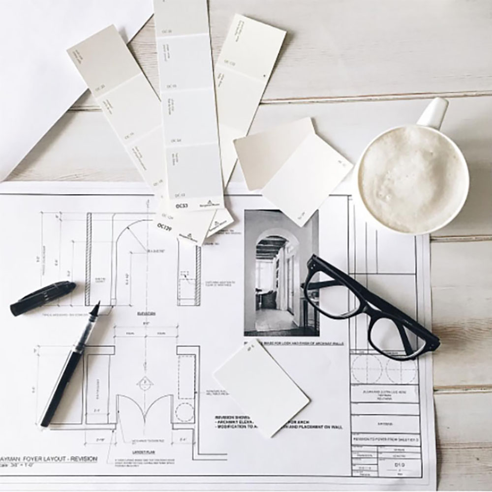
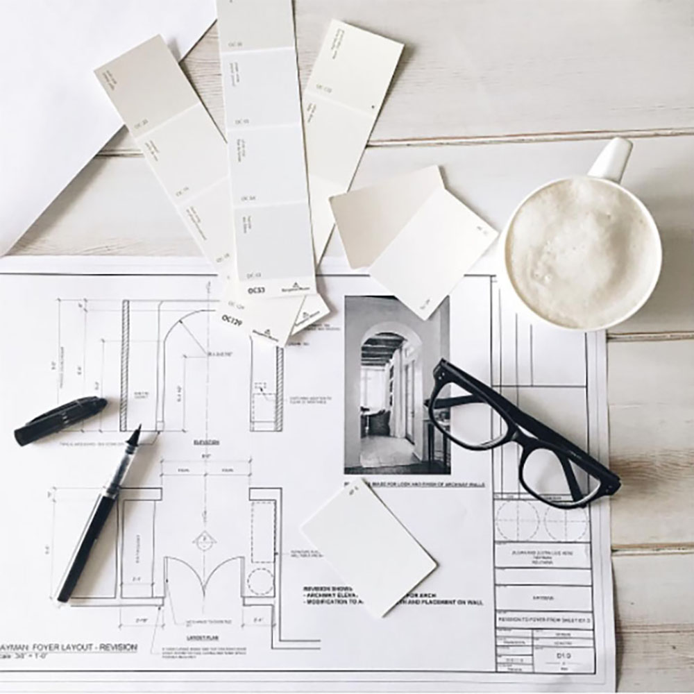
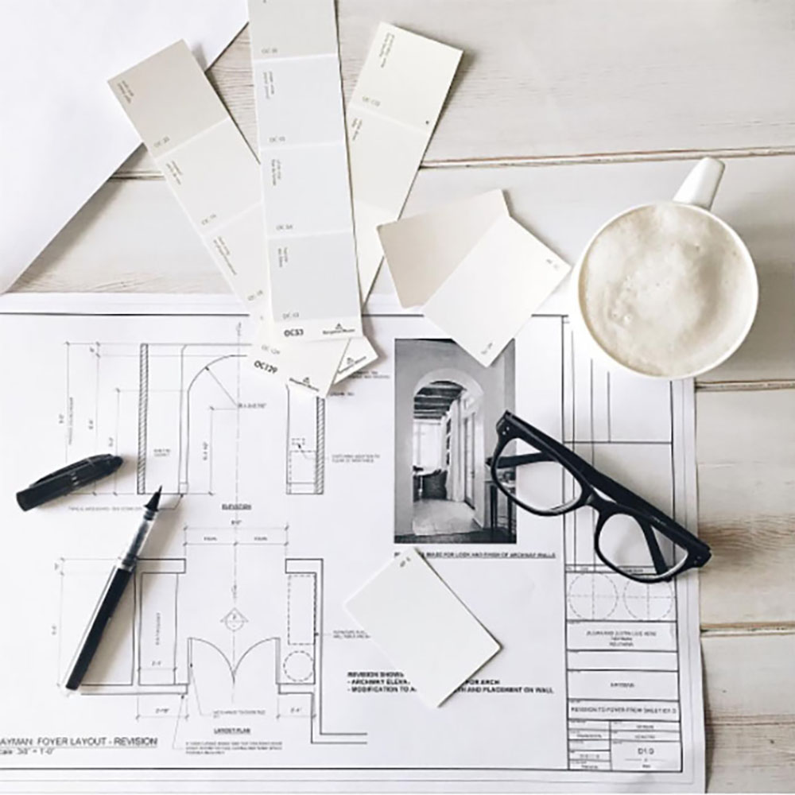

Lesly Gonzalez
Business Administration📚
My professional experience started in high school with volunteering and being involved in sports/clubs. I joined my cheerleading team the first year in high school. I became a coach assistant that same summer and continued to do so until I graduated. My responsibilities included: taking daily attendance and inputting it into the school sysytem, setting up and cleaning up our practice areas everyday, and most importnantly, serving as a student leader to my fellow teamates. This is where I realized that managing and leading was my strong point and I wanted to continue doing so. Apart from that I have had multiple customer service and team management experiences. In the East Valley animal shelter, I was in charge of setting up new volunteers and helping them transistion. I trained them with basic animal saftey and reinforced their customer service skills. I gained various skills from this volunteer experience. Skills such as multitasking and time managemtent. Most of the time animal shelters are understaffed so being able to help the staff during rush hours was really rewarding to me. Overall, this expericence taught me how to get out of my comfort zone and work collaboratively with others.
Experience
Animal Shelter Secretary
• Recieved customers at front desk
• Facilitated adoption processes
• Experience with customer service and management
January 2019 - July 2020
Assistant
• Responsible for phone calls with potential customers
• Put together work estimates
• Experience with Excel, Sheets, and Word
January 2021 - Present
Cheer Coach Assistant
• Helped incoming athletes adjust to new team
• Reviewed and graded athletes overall progress
• Helped put organize fundraising events and school spirit events
• Oversaw 40 individual athletes everyday
June 2016 - June 2020
Education
UC Riverside
BS in Business Administration
Concentration in Management
August 2020 - June 2024
Portfolio

.jpg) 

